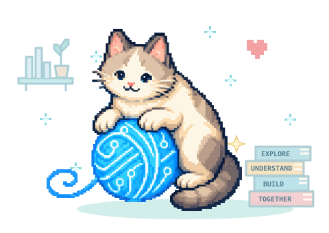
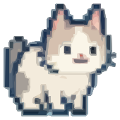

Codeclew helps engineers and coding agents investigate code, explain behavior, review selected changes and prepare source-linked documentation. Start with a concrete question; get a bounded account of the relevant functions, branches and effects, with inspectable source and explicit unknowns.
See a result or ask one question
- What Codeclew gives you — a real question, source-linked result and a repeatable first task.
- Thread boundaries — where the path starts and why it stops.
- Languages and annotations — what each workflow can establish.
- Cross-service threads — contracts, declared handoffs and optional receiver evidence.

Install and ask one question
Install Codeclew and its Codex instructions:
curl -fsSL https://codeclew.github.io/codeclew/install.sh | shexport PATH="$HOME/.local/bin:$PATH"clew skill install --agent codexIn your repository, run:
clew doctor repository --repo "$PWD"Ask a focused question
Replace the bracketed fields before pasting this template into your agent. A ready scope is useful only when it covers your question and starting point.
Question: [For example: when does reserve reject a quantity, and which effects precede its response?]
Starting point: [Function or method plus repository/service; if unknown, locate candidates first.]
Choose a ready scope from the doctor report that is relevant to this question and starting point. Use its reported target ref, profile and compilation for read-only analysis. If the root is ambiguous or no relevant scope is ready, explain the missing input before proceeding.
Return the selected revision and exact source, the relevant branches and effects, and where the evidence stops. Distinguish a source finding from runtime behavior.The agent uses your configured model and provider; Codeclew requires no paid API or hosted model. Try the filled Weather timeout question and compare its actual source-linked result.
Explore the weather demo: https://github.com/codeclew/clew-weather-demo
Weather save-city account (retained descriptions and their own evidence limits)